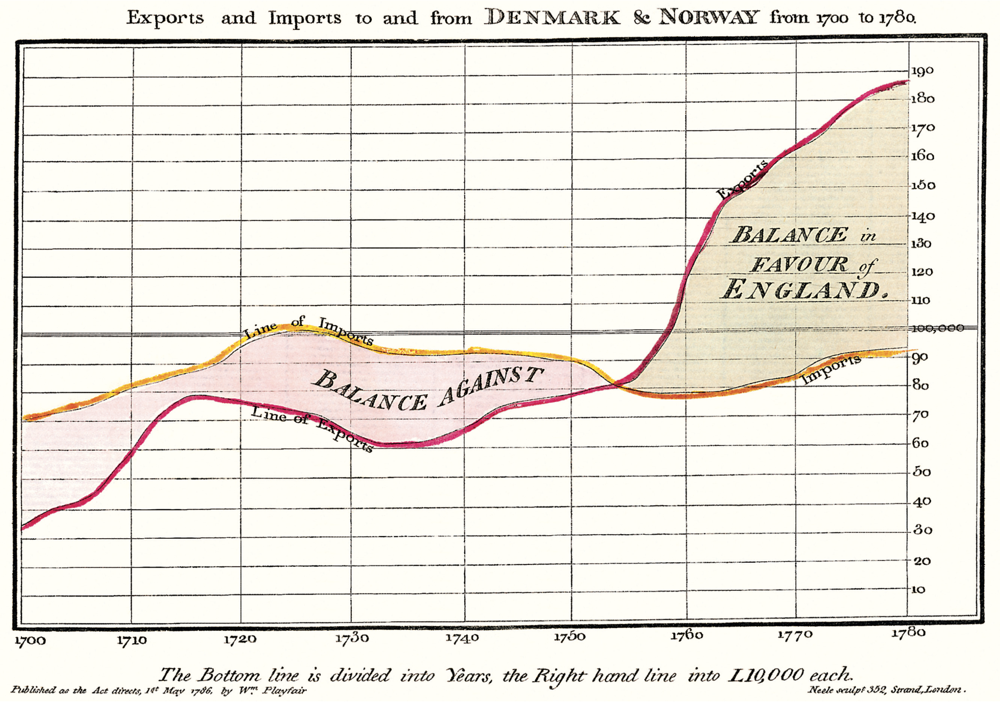

<!DOCTYPE html><html lang="en"></html><head><meta charset="utf-8">  <title>HB - Tufte Blog</title>  <link rel="stylesheet" href="assets/css/tufte.css">  <link rel="stylesheet" href="assets/css/latex.css">  <meta name="viewport" content="width=device-width, initial-scale=1"><body class="page-index index"><h1>Tufte Blog</h1><p class="subtitle">A HarpJS Blog boilerplate based on Tufte CSS</p> <article id="content"><h1>HB-Tufte</h1><p class="subtitle">What is this, exactly? </p> <section>  <p>This is <a href="https://github.com/edwardtufte/tufte-css">Tufte-CSS</a> and <a href="http://harpjs.com">HarpJS</a>. </p>         <p>Tufte CSS<label for="sn-tufte-css" class="margin-toggle sidenote-number"></label><input id="sn-tufte-handout" type="checkbox" class="margin-toggle"><span class="sidenote"><a href="https://github.com/edwardtufte/tufte-css">Tufte CSS</a></span> provides tools to style web articles using the ideas demonstrated by Edward Tufte’s books and handouts. HarpJS<label for="sn-harpjs" class="margin-toggle sidenote-number"></label><input id="sn-tufte-handout" type="checkbox" class="margin-toggle"><span class="sidenote"><a href="http://harpjs.com">HarpJS</a></span> is a static web server / site generator with built in preprocessing.</p>   <p>I started with the standard HarpJS blog<label for="sn-hb-blog" class="margin-toggle sidenote-number"></label><input id="sn-tufte-handout" type="checkbox" class="margin-toggle"><span class="sidenote"><a href="https://github.com/harp-boilerplates/hb-blog">HB-Blog</a></span> boilerplate. I stripped out the unessential files, and dropped in Tufte-CSS for a spiffy new layout. </p></section> <h1>Style</h1><p class="subtitle">Let's see how some of this stuff looks.</p> <section><h1>Heading 1</h1><h2>Heading 2</h2><h3>Heading 3</h3><h4>Heading 4</h4><h5>Heading 5</h5><h6>Heading 6</h6><p>Paragraph</p><p> 
Here is what an image looks like in a paragraph:<span class="marginnote">And here is what in an image looks like in a sidenote: </span></p></section><p><a href="/"></a></p><p><strong>Matthias Jordan</strong></p><p>I live in the Bay Area. I take pictures, cook, and play around with code on servers. </p><p>Twitter: <a href="http://twitter.com/iammatthias">@iammatthias</a></p></article><hr><footer><div class="container"><div class="row"><div class="col-sm-6"><p><small>TuftCSS+HarpJS=♡</small></p></div></div></div></footer></body></head>